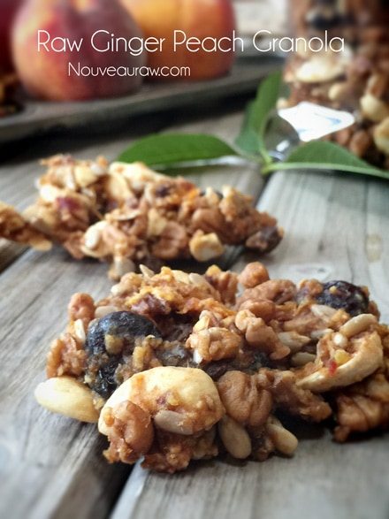
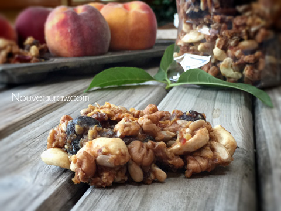

Ginger Peach Granola

raw / vegan / gluten-free
This granola has turned into a staple in our household. I keep a large glass container of it on the kitchen island, and I must hear the lid come off it at least 5x a day! Ching, ching, ching. You know that sound.
Ginger Peach Granola
…is filled with a mouthful of complex flavors that just keeps you coming back for more. You can eat it as a walk-by snack, press it into a bar shape for on the go eating or pour fresh nut milk over it and have it as a breakfast cereal. No matter what delivery form you choose for yourself, you won’t be disappointed!
I have made this recipe many times over, and our favorite is to use cashews instead of almonds and fresh peaches, instead of dried ones. The flavors are more pronounced. But seriously, either way is delicious.
When I make granola for snacking purposes, I like to grab a handful of the batter and drop it from up above onto the dehydrator tray, leaving it in small clusters. This makes for a hardy snack, but feel free to spread it thin if you want it more crumbly. You just can’t go wrong.
Even though this is a raw recipe, for those of you who don’t own dehydrators… you can bake it on a cookie sheet at 350 degrees. The cook time will vary depending on how wet the nuts and seeds are. My suggestion would be to check it every 10 minutes, giving it a stir at the same time. Nuts can burn quickly if not watched. Enjoy!
- 5 cups (625 g) apples cored and chopped (use organic)
- 1 1/2 cups (247 g) Medjool dates, pitted, rehydrated
- 1/2 cup maple syrup
- 2 Tbsp fresh lemon juice
- 2 tsp ginger powder
- 1 Tbsp vanilla extract
- 1 tsp ground Ceylon cinnamon
- 1 tsp Himalayan pink salt
- 2 cups raw cashews or almonds, soaked
- 3 cups raw pecans, soaked
- 1 cup raw pumpkin or sunflower seeds, soaked
- 1 cup dried cranberries
- 1 cup raisins
- 2 cups diced dried or (325 g) fresh peaches
Preparation:
- In a food processor, place the fresh apples, dates, maple syrup, lemon juice, ginger, vanilla, cinnamon, salt and grind until completely smooth. Transfer the mixture to a large mixing bowl.
- Drain and rinse the nuts and seeds. Add the almonds, pecans, and pumpkin seeds to the food processor. Coarsely chop the nuts and seeds in a few quick pulses. Add them to the bowl with the apple mixture.
- If you want the granola to be more chunky, just add the nuts and seeds to the bowl, without breaking them down.
- Now add the cranberries/raisins / dried or fresh peaches and combine well.
- Spread the granola out onto the teflex sheets that come with your dehydrator.
- Dry at 145 degrees (F) for 1 hour, then reduce to 115 degrees (F) for 16-24 hours. I like my granola chewier so I don’t dry it as long. If you want it to be really dry, go for the maximum length of time. Do keep in mind that as the granola cools, it gets a bit harder. Remember also that if you leave more moisture in your granola, it will have a shorter shelf life.
- Store in an air-tight container. If you store it in the fridge, it will extend the shelf-life if that is a concern. It freezes beautifully as well.
Tips:
- This batch made 4 dehydrator trays worth.
- Feel free to add your own mix of nuts and dried fruits if you want!
The Institute of Culinary Ingredients:
- To learn more about maple syrup by clicking (here).
- Why do I specify Ceylon cinnamon? Click (here) to learn why.
- What is Himalayan pink salt and does it really matter? Click (here) to read more about it.
Culinary Explanations:
- Why do I start the dehydrator at 145 degrees (F)? Click (here) to learn the reason behind this.
- When working with fresh ingredients, it is important to taste test as you build a recipe. Learn why (here).
- Don’t own a dehydrator? Learn how to use your oven (here). I do however truly believe that it is a worthwhile investment. Click (here) to learn what I use.

© AmieSue.com